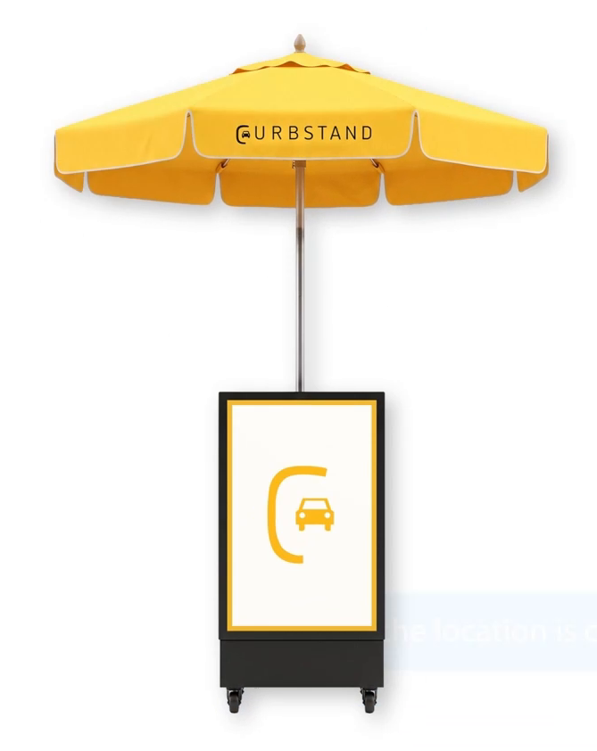
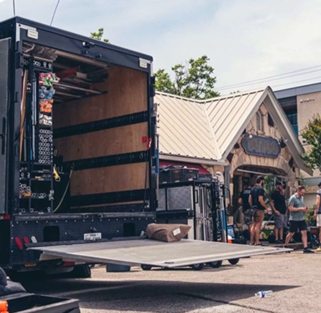
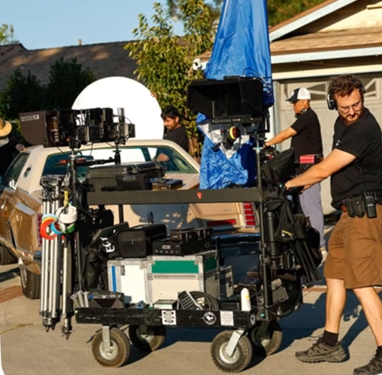
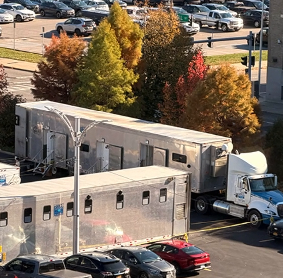
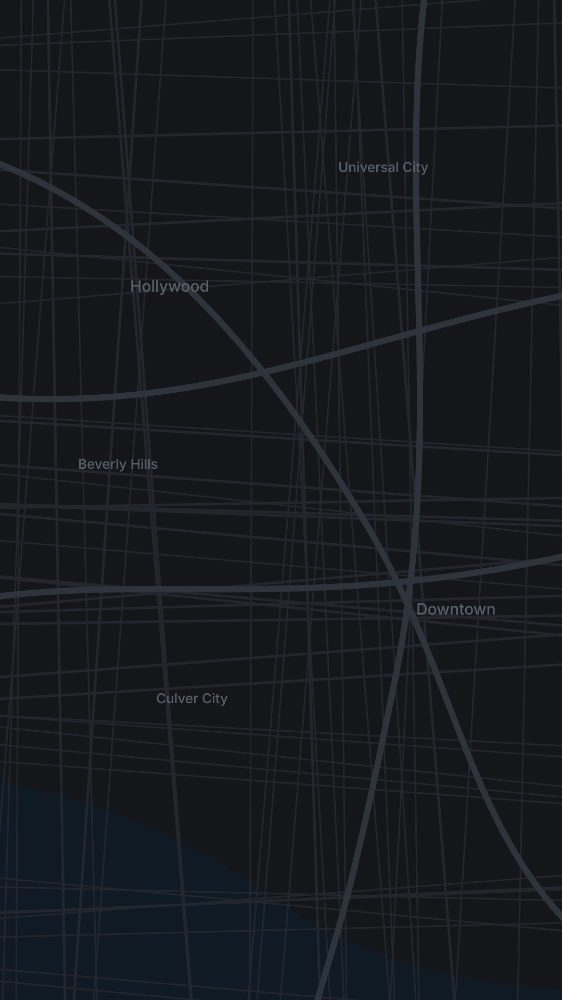

Today 7:12 AM
Boss, the location is confirmed.
Great. Where do the trailers park?
And the grip truck. And 40 crew cars.

Curbstand's got us covered.
9:41
●●● ▮
N
Nolan ›
iMessage
Parking for the
whole production.
Trailers & basecamp

Equipment trucks

Cast & crew
Support vehicles

Full-lot rentals

Your set
Cahuenga
Hollywood
Fairfax, Melrose & Beverly
543 N Fairfax · 7250 Melrose · 8701 Beverly
Downtown Los Angeles
601 S Main · 801 S Grand · 846 San Julian
Lots near
your shoot.
C
U
R
B
S
T
A
N
D
Tell us where you're filming.
We'll handle the parking.